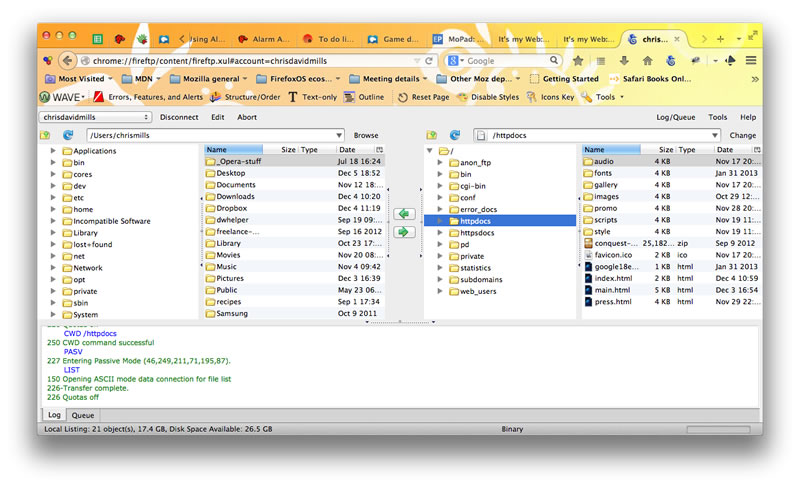

Hello again!
In the final section of this course we will start by having a look at what everyone has built, have a discussion about what tools you need to do web design/development, then talk about what it takes to become a web developer in terms of knowledge and attitude. After that I'll take questions, and leave you with some further resources.
Presenting the projects
Let's take some time out to look at what everyone has built during the course!
What tools do you need?
To be a web designer/developer, there are a few things you should get/understand. We won't cover all of these in this course; this is mainly just for your reference.
- Web browsers
- A code editor
- A file structure
- The web community
- A graphics editor
- Server space and a domain
- An FTP program
Web browsers
As a web developer, you will need to do a lot of testing, to make sure that the websites you create will work properly in all the browsers your users will be using. This will require you to install multiple browsers on your own machine, and possibly even have access to multiple devices (lots of different types of device can access the Web these days.)
A code editor
Creating websites requires you to write code. To do this, you'll need a code editor of some kind. This is usually* an application that sits on your computer and allows you to edit code just as you'd edit a story using Word.
Some recommended free code editors:
- Notepad++ on Windows
- Textwrangler on Mac
- Bluefish on Linux
- Sublime text is available across all three platforms; a free trial is available
* I said usually above, because throughout this course we have been writing code inside Thimble, which is a web page.
A file structure
Once you've got your code editor up and running, you can start to create code files with it. As a web designer/developer, you'll be dealing mostly with plain text files (Microsoft Word, for example, is no good for writing code in, as Word files are not plain text: they are binary files, with lots of code information inside them as well as the Words you write into your document.)
You can create a new file in most text editors using File > New, or pressing Ctrl + N (Cmd + N on a Mac.) The best thing to do when creating a website is to start off with an index.html file to act as your main page, in a dedicated directory, then add sub folders to contain your different file types, such as images, JavaScript files, and CSS files. For example:

It is a matter of structuring your files intelligently so you will know where to find everything, and the files can easily talk to one another.
Windows has a really annoying option turned on by default called "Hide extensions for known file types", which makes it impossible to create the .html, .css, etc. files that you need to do web development. You can turn this off in Windows Explorer using View > Folder Options > View > untick "Hide extensions for known file types".
A graphics editor
This is not essential straight away, but important in the long run; eventually you'll have to start making some graphics. Getting hold of a good and free graphics editor is not as easy as it is with code editors. The one most people tend to use is Photoshop, but this is quite expensive, and complex to use. Some options are:
- Paint: Microsoft Paint has been available for free as part of Windows for ever. It is really basic and regarded by some as a bad joke, but it is still fine for performing basic functions such as resizing, cropping, and saving images in different file formats.
- The GIMP: The GNU Image Manipulation Program is available for Mac, Windows and Linux, and is free. It is fairly complex to use, but a fairly powerful option.
- ImageOptim: This Mac product takes images and makes them as small as possible. This is a very useful function for a web designer to perform, as you want to make your websites as small in file size as possible.
- Photoscape: A fairly decent Windows graphics editor
Graphic design is really a complete separate subject on its own, and I didn't really have time to discuss it in this course.
Server space and a domain
When you want to put a website you've coded on your computer up on the Web for others to access, you need two things:
- Server space, often called hosting space: This means you basically rent some space on someone else's web server, and use that space to store your website on. This can be purchased from a web hosting company.
- A domain name: This is the name your website is accessed via. Domain names are also rented, from companies called domain name registrars.
An FTP program
An FTP program is an application that you use to transfer your website's files from your local computer to your server space. This is how your website gets up on the Web! A typical FTP program looks as follows:
Good (free) FTP programs include:
- FileZilla: A free FTP program for Windows, Mac and Linux
- CyberDuck: A decent Mac-only program
- FireFTP: A Firefox browser extension
Becoming a web designer/developer
Working with web technologies is quite a good line of work to go into:
- You can generally dress however you want (less chance of needing to wear a smart suit.)
- It pays pretty well (design and code are voodoo magic to those who don't get it.)
- You don't need a degree or phd to get the job (you can learn it by yourself.)
- You will meet lots of interesting people.
Basically, you just need to have passion for creating interesting things, computer literacy, and patience. You need to get stuck in and not be afraid to experiment, to not be afraid of failure. To start with, design and coding may seem really hard, but it gets easier quite quickly as you start to understand how things work. I think some people have more of a natural talent for it than others, but I believe that anyone can learn to code, and design to a certain extent.
Steve jobs said it well:
Everything around you that you call life was made up by people that were no smarter than you and you can change it, you can influence it, you can build your own things that other people can use.
Further resources
Some links to further teaching resources that may help to teach, or will at least provide inspiration.